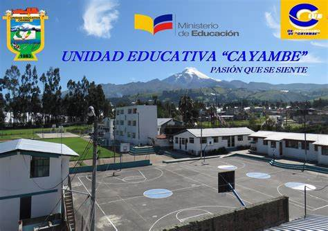
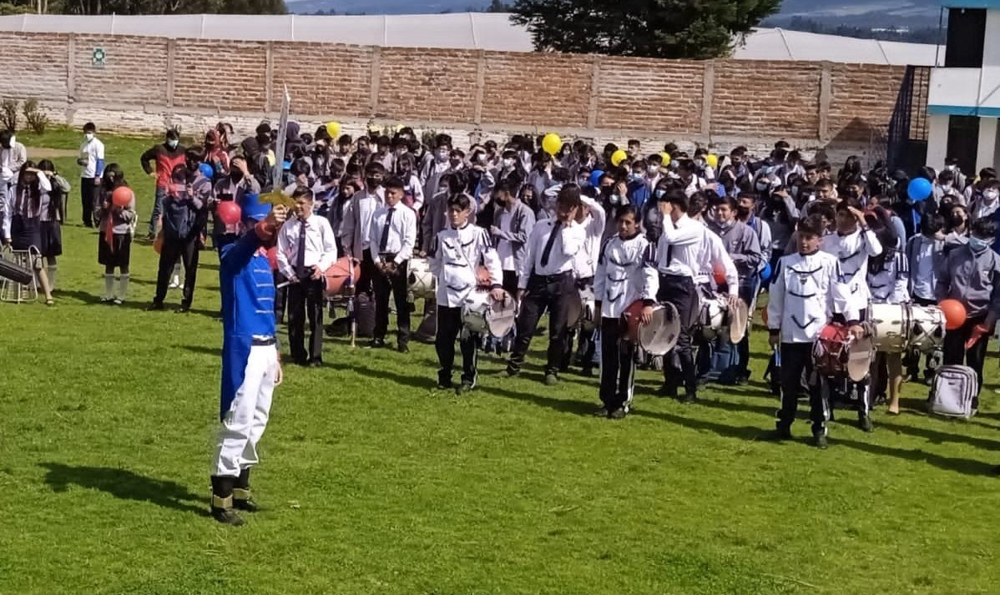

Unidad Educativa CAYAMBE
La Unidad Educativa “Cayambe” es una institución con una rica historia y un compromiso sólido con la educación técnica y la excelencia. Permíteme compartir algunos detalles sobre su origen y misión:
-
Origen y Fundación:
- La Unidad Educativa “Cayambe” comenzó su vida institucional hace 47 años. Desde entonces, ha sido un faro de aprendizaje y crecimiento para la comunidad de Cayambe1.
- A lo largo de los años, ha evolucionado y se ha adaptado para satisfacer las necesidades cambiantes de los estudiantes y la sociedad.
- 
-
Misión:
- La misión de la Unidad Educativa “Cayambe” es formar bachilleres técnicos conscientes de su interculturalidad y con espíritu emprendedor.
- Se basa en conocimientos teórico-prácticos, principios axiológicos y la preservación del ambiente.
- El objetivo es preparar a los estudiantes para ingresar al campo laboral o continuar con estudios superiores, equipándolos para enfrentar con éxito los desafíos del milenio2.

-
Visión:
- La institución aspira a convertirse en un líder en educación técnica, con identidad propia y recursos humanos de excelencia.
- Busca mantenerse a la vanguardia con tecnología moderna y cumplir con los más altos estándares de calidad2.
- 
En resumen, la Unidad Educativa “Cayambe” es un pilar educativo en la comunidad, comprometido con la formación integral de sus estudiantes y el desarrollo sostenible de la región1.